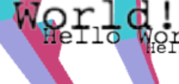

WebGL 텍스트 - 텍스처
이 포스트는 WebGL에 관한 많은 글에서 이어집니다. 마지막은 WebGL Canvas 위에 Canvas 2D를 사용한 텍스트 렌더링에 대한 것이었는데요. 아직 읽지 않았다면 계속하기 전에 확인해보는 게 좋습니다.
지난 글에서 WebGL Scene 위에 텍스트를 그리기 위한 2D Canvas 사용법을 살펴봤습니다. 해당 기술은 잘 작동하고 사용하기 쉽지만 텍스트가 다른 3D 객체에 가려질 수 없다는 한계가 있습니다. 이를 위해서는 실제로 WebGL에서 텍스트를 그려야 합니다.
가장 간단한 방법은 그 안에 텍스트가 포함된 텍스처를 만드는 겁니다. 예를 들어 포토샵이나 기타 페인트 프로그램에 들어가 텍스트로 채워진 이미지를 그릴 수 있습니다.

그런 다음 plane geometry를 만들고 표시하는데요. 이게 실제로 제가 작업했던 일부 게임들이 텍스트를 표시하는 방식입니다. 예를 들어 Locoroco는 약 270개의 문자열만 있었습니다. 이는 17개의 언어로 현지화되었는데요. 모든 언어가 포함된 엑셀 시트와 포토샵을 실행하고 각 언어의 메세지를 하나 하나 텍스처로 생성하는 스크립트로 이를 수행했습니다.
물론 런타임에 텍스처를 생성할 수도 있는데요. WebGL은 브라우저에서 실행되기 때문에 Canvas 2D API를 활용하여 텍스처를 생성할 수 있습니다.
이전 글의 예제를 가져와 2D Canvas를 텍스트로 채우는 함수를 추가해봅시다.
var textCtx = document.createElement("canvas").getContext("2d");
// 캔버스 중앙에 텍스트 만들기
function makeTextCanvas(text, width, height) {
textCtx.canvas.width = width;
textCtx.canvas.height = height;
textCtx.font = "20px monospace";
textCtx.textAlign = "center";
textCtx.textBaseline = "middle";
textCtx.fillStyle = "black";
textCtx.clearRect(0, 0, textCtx.canvas.width, textCtx.canvas.height);
textCtx.fillText(text, width / 2, height / 2);
return textCtx.canvas;
}
이제 WebGL에서 'F'와 텍스트, 두 가지를 그려야 하는데, 이전 글에서 설명한 몇 가지 도우미 함수를 사용하도록 전환하겠습니다.
programInfo, bufferInfo 등이 무엇인지 모르겠다면 해당 글을 봐주세요.
그럼 'F'와 단위 사각형을 만들어봅시다.
// 'F'에 대한 데이터 생성
var fBufferInfo = primitives.create3DFBufferInfo(gl);
// 'text'에 대한 단위 사각형 생성
var textBufferInfo = primitives.createPlaneBufferInfo(gl, 1, 1, 1, 1, m4.xRotation(Math.PI / 2));
단위 사각형은 1단위 크기의 사각형입니다.
이는 원점의 중심에 있습니다.
createPlaneBufferInfo는 xz plane에 평면을 생성하는데요.
행렬을 전달하여 회전시키고 xy plane unit quad를 제공합니다.
다음으로 2개의 셰이더를 생성합니다.
// GLSL program 설정
var fProgramInfo = createProgramInfo(gl, ["vertex-shader-3d", "fragment-shader-3d"]);
var textProgramInfo = createProgramInfo(gl, ["text-vertex-shader", "text-fragment-shader"]);
그리고 텍스트 텍스처를 생성합니다.
// 텍스트 텍스처 생성
var textCanvas = makeTextCanvas("Hello!", 100, 26);
var textWidth = textCanvas.width;
var textHeight = textCanvas.height;
var textTex = gl.createTexture();
gl.bindTexture(gl.TEXTURE_2D, textTex);
gl.texImage2D(gl.TEXTURE_2D, 0, gl.RGBA, gl.RGBA, gl.UNSIGNED_BYTE, textCanvas);
// 2의 거듭 제곱이 아니라도 렌더링할 수 있는지 확인
gl.texParameteri(gl.TEXTURE_2D, gl.TEXTURE_MIN_FILTER, gl.LINEAR);
gl.texParameteri(gl.TEXTURE_2D, gl.TEXTURE_WRAP_S, gl.CLAMP_TO_EDGE);
gl.texParameteri(gl.TEXTURE_2D, gl.TEXTURE_WRAP_T, gl.CLAMP_TO_EDGE);
'F'와 텍스트의 uniform을 설정합니다.
var fUniforms = {
u_matrix: m4.identity(),
};
var textUniforms = {
u_matrix: m4.identity(),
u_texture: textTex,
};
이제 F의 행렬을 계산할 때 F의 view matrix를 따로 저장합니다.
var fViewMatrix = m4.translate(viewMatrix,
translation[0] + xx * spread, translation[1] + yy * spread, translation[2]);
fViewMatrix = m4.xRotate(fViewMatrix, rotation[0]);
fViewMatrix = m4.yRotate(fViewMatrix, rotation[1] + yy * xx * 0.2);
fViewMatrix = m4.zRotate(fViewMatrix, rotation[2] + now + (yy * 3 + xx) * 0.1);
fViewMatrix = m4.scale(fViewMatrix, scale[0], scale[1], scale[2]);
fViewMatrix = m4.translate(fViewMatrix, -50, -75, 0);
F를 그리면 이렇게 나옵니다.
gl.useProgram(fProgramInfo.program);
webglUtils.setBuffersAndAttributes(gl, fProgramInfo, fBufferInfo);
fUniforms.u_matrix = m4.multiply(projectionMatrix, fViewMatrix);
webglUtils.setUniforms(fProgramInfo, fUniforms);
// Geometry 그리기
gl.drawElements(gl.TRIANGLES, fBufferInfo.numElements, gl.UNSIGNED_SHORT, 0);
텍스트의 경우 F의 원점 위치만 있으면 됩니다. 또한 텍스처의 넓이에 맞도록 단위 사각형의 크기를 조정해야 합니다. 마지막으로 projection matrix로 곱해야 합니다.
// 텍스트에 'F'의 view position만 사용
var textMatrix = m4.translate(projectionMatrix,
fViewMatrix[12], fViewMatrix[13], fViewMatrix[14]);
// 사각형을 필요한 크기로 조정
textMatrix = m4.scale(textMatrix, textWidth, textHeight, 1);
그런 다음 텍스트를 렌더링합니다.
// 텍스트를 그리도록 설정
gl.useProgram(textProgramInfo.program);
webglUtils.setBuffersAndAttributes(gl, textProgramInfo, textBufferInfo);
m4.copy(textMatrix, textUniforms.u_matrix);
webglUtils.setUniforms(textProgramInfo, textUniforms);
// 텍스트 그리기
gl.drawElements(gl.TRIANGLES, textBufferInfo.numElements, gl.UNSIGNED_SHORT, 0);
그리고 여기 결과입니다.
가끔씩 텍스트의 일부가 F의 일부를 가린다는 걸 눈치채셨을 겁니다. 그 이유는 사각형을 그리기 때문인데요. 캔버스의 기본 색상이 투명한 검정색(0,0,0,0)이며 해당 색상을 사각형에 그리고 있습니다. 이 대신에 픽셀을 섞을 수 있습니다.
gl.enable(gl.BLEND);
gl.blendFunc(gl.SRC_ALPHA, gl.ONE_MINUS_SRC_ALPHA);
이는 source pixel(프래그먼트 셰이더의 색상)을 가져와 blend 함수를 이용해 dest pixel(캔버스의 색상)과 결합합니다.
Blend 함수에서 source는 SRC_ALPHA로, dest는 ONE_MINUS_SRC_ALPHA로 설정했습니다.
result = dest * (1 - src_alpha) + src * src_alpha
다음은 dest가 녹색(0,1,0,1)이고 source가 빨간색(1,0,0,1)인 예시입니다.
src = [1, 0, 0, 1]
dst = [0, 1, 0, 1]
src_alpha = src[3]
result = dst * (1 - src_alpha) + src * src_alpha
result = dst * 0 + src * 1
result = src
다음은 투명한 검정색(0,0,0,0)인 텍스처 부분입니다.
src = [0, 0, 0, 0]
dst = [0, 1, 0, 1]
src_alpha = src[3]
result = dst * (1 - src_alpha) + src * src_alpha
result = dst * 1 + src * 0
result = dst
여기 블렌딩을 활성화한 결과입니다.
이게 더 낫지만 아직 완벽하진 않습니다. 가까이서 보면 가끔씩 이런 문제를 볼 수 있는데요.

무슨 일이 일어난 걸까요? 현재 F를 그린 다음 텍스트를 그리고, 다음 F와 텍스트 그리기를 반복하고 있는데요. Depth buffer가 있기 때문에, F의 텍스트를 그릴 때 블렌딩으로 일부 픽셀이 배경색을 유지하더라도, depth buffer는 여전히 업데이트됩니다. 다음 F를 그릴 때 F의 일부가 이전에 그려진 텍스트의 픽셀 뒤에 있다면 그려지지 않을 겁니다.
GPU에서 3D 렌더링할 때 겪는 가장 어려운 문제 중 하나에 직면했습니다. 바로 투명도 문제입니다.
대부분의 투명도 렌더링 문제에 가장 일반적인 해결책은 모든 불투명체를 먼저 그리고, depth buffer testing은 켜고 depth buffer updating은 끈 상태에서, z거리로 정렬된 투명한 물체를 모두 그리는 겁니다.
먼저 불투명한 것(F)과 투명한 것(텍스트)을 분리해봅시다. 우선 텍스트 위치를 저장할 배열을 선언할 겁니다.
var textPositions = [];
그리고 F의 렌더링 루프에서 이 위치들을 저장할 겁니다.
var fViewMatrix = m4.translate(viewMatrix,
translation[0] + xx * spread, translation[1] + yy * spread, translation[2]);
fViewMatrix = m4.xRotate(fViewMatrix, rotation[0]);
fViewMatrix = m4.yRotate(fViewMatrix, rotation[1] + yy * xx * 0.2);
fViewMatrix = m4.zRotate(fViewMatrix, rotation[2] + now + (yy * 3 + xx) * 0.1);
fViewMatrix = m4.scale(fViewMatrix, scale[0], scale[1], scale[2]);
fViewMatrix = m4.translate(fViewMatrix, -50, -75, 0);
+// f의 view position 저장
+textPositions.push([fViewMatrix[12], fViewMatrix[13], fViewMatrix[14]]);
'F'를 그리기 전에 블렌딩을 비활성화하고 depth buffer 작성을 켜겠습니다.
gl.disable(gl.BLEND);
gl.depthMask(true);
텍스트 그리기의 경우 블렌딩을 활성화하고 depth buffer 작성을 끌겁니다.
gl.enable(gl.BLEND);
gl.blendFunc(gl.SRC_ALPHA, gl.ONE_MINUS_SRC_ALPHA);
gl.depthMask(false);
그런 다음 저장해둔 모든 위치에 텍스트를 그립니다.
+// 텍스트를 그리도록 설정
+gl.useProgram(textProgramInfo.program);
+
+webglUtils.setBuffersAndAttributes(gl, textProgramInfo, textBufferInfo);
+textPositions.forEach(function(pos) {
// 텍스트 그리기
// 텍스트에 'F'의 view position만 사용
* var textMatrix = m4.translate(projectionMatrix, pos[0], pos[1], pos[2]);
// 필요한 크기로 사각형의 크기를 조정
textMatrix = m4.scale(textMatrix, textWidth, textHeight, 1);
m4.copy(textMatrix, textUniforms.u_matrix);
webglUtils.setUniforms(textProgramInfo, textUniforms);
// 텍스트 그리기
gl.drawElements(gl.TRIANGLES, textBufferInfo.numElements, gl.UNSIGNED_SHORT, 0);
+});
Current program과 attribute의 설정을 루프 외부로 옮겼는데, 동일한 것을 여러 번 그리기 때문에 각 반복마다 설정할 이유가 없습니다.
그리고 이제 대부분 작동합니다.
참고로 위에서 언급한 것처럼 정렬하지 않았는데요. 이 경우에는 대부분 불투명 텍스트를 그리기 때문에 아마 정렬해도 눈에 띄는 차이는 없을 것이므로 다른 글을 위해 남겨두겠습니다.
또 다른 문제는 텍스트가 'F'와 교차한다는 겁니다. 만약 MMO를 만들고 있고 각 플레이어의 텍스트가 항상 나타나도록 하고 싶다면 머리 위에 있도록 할 수 있는데요. 항상 플레이어 위에 있기에 충분한 단위의 수만큼 +Y로 이동시킵니다.
카메라 앞쪽으로 이동시킬 수도 있는데요. 그냥 여기에서 해봅시다. 'pos'는 view space에 있기 때문에 눈(view space의 0,0,0)에 상대적입니다. 따라서 정규화하면 눈에서 해당 지점을 가리키는 단위 벡터를 얻은 다음, 텍스트를 눈에서 멀어지거나 가까워지도록 특정 단위의 수만큼 이동하기 위해 일정량을 곱할 수 있습니다.
+// pos가 view space에 있기 때문에 눈에서 특정 위치까지의 벡터를 의미합니다.
+// 따라서 벡터를 따라 눈을 향해 약간의 거리를 다시 이동합니다.
+var fromEye = m4.normalize(pos);
+var amountToMoveTowardEye = 150; // F는 150단위의 길이
+var viewX = pos[0] - fromEye[0] * amountToMoveTowardEye;
+var viewY = pos[1] - fromEye[1] * amountToMoveTowardEye;
+var viewZ = pos[2] - fromEye[2] * amountToMoveTowardEye;
+var textMatrix = m4.translate(projectionMatrix, viewX, viewY, viewZ);
*var textMatrix = m4.translate(projectionMatrix, viewX, viewY, viewZ);
// 필요한 크기로 사각형의 크기를 조정
textMatrix = m4.scale(textMatrix, textWidth, textHeight, 1);
여기 그 결과입니다.
아직 글자의 가장자리에 문제가 있음을 알 수 있는데요.

여기서 문제는 Canvas 2D API가 미리 곱한 알파 값만 나타낸다는 겁니다. 캔버스의 컨텐츠를 텍스처에 업로드할 때 WebGL은 값을 미리 곱하지 않으려고 하지만 미리 곱한 알파는 손실되었기 때문에 이를 완벽히 수행할 수 없습니다.
이를 고치기 위해 미리 곱하지 말라고 WebGL에 지시해봅시다.
gl.pixelStorei(gl.UNPACK_PREMULTIPLY_ALPHA_WEBGL, true);
이는 미리 곱한 알파 값을 gl.texImage2D와 gl.texSubImage2D에 제공하라고 WebGL에 지시합니다.
gl.texImage2D에 전달된 데이터가 이미 Canvas 2D 데이터처럼 미리 곱해졌다면 WebGL은 그냥 전달만 합니다.
또한 블렌딩 함수를 수정해야 합니다.
-gl.blendFunc(gl.SRC_ALPHA, gl.ONE_MINUS_SRC_ALPHA);
+gl.blendFunc(gl.ONE, gl.ONE_MINUS_SRC_ALPHA);
이전에는 src color에 알파를 곱했습니다.
이게 SRC_ALPHA가 의미하는 것입니다.
하지만 이제 텍스처의 데이터에 이미 알파가 곱해졌는데요.
이것이 사전 곱셈이 의미하는 바입니다.
따라서 곱셈에 GPU가 필요하지 않습니다.
그러니 1로 곱함을 의미하는 ONE으로 설정합시다.
이제 가장자리가 없어졌습니다.
텍스트를 고정된 크기로 유지하면서 올바르게 정렬하려면 어떻게 해야 할까요?
Perspective를 떠올려보면 perspective matrix는 거리에 따라 점점 작아지도록 만들기 위해 1 / -Z로 객체의 크기를 조정합니다.
따라서 원하는 크기의 -Z배로 크기를 조정하여 보정할 수 있습니다.
...
// pos가 view space에 있기 때문에 눈에서 특정 위치까지의 벡터를 의미합니다.
// 따라서 벡터를 따라 눈을 향해 약간의 거리를 다시 이동합니다.
var fromEye = normalize(pos);
var amountToMoveTowardEye = 150; // F는 150단위의 길이
var viewX = pos[0] - fromEye[0] * amountToMoveTowardEye;
var viewY = pos[1] - fromEye[1] * amountToMoveTowardEye;
var viewZ = pos[2] - fromEye[2] * amountToMoveTowardEye;
+var desiredTextScale = -1 / gl.canvas.height; // 1x1 픽셀
+var scale = viewZ * desiredTextScale;
var textMatrix = m4.translate(projectionMatrix, viewX, viewY, viewZ);
// 필요한 크기로 사각형의 크기를 조정
*textMatrix = m4.scale(textMatrix, textWidth * scale, textHeight * scale, 1);
...
각 F에 다른 텍스트를 그리고 싶다면 F마다 새로운 텍스처를 만들고 F의 text uniform을 업데이트해야 합니다.
// 각 F마다 하나씩, 텍스트 텍스처 생성
var textTextures = [
"anna", // 0
"colin", // 1
"james", // 2
"danny", // 3
"kalin", // 4
"hiro", // 5
"eddie", // 6
"shu", // 7
"brian", // 8
"tami", // 9
"rick", // 10
"gene", // 11
"natalie",// 12,
"evan", // 13,
"sakura", // 14,
"kai", // 15,
].map(function(name) {
var textCanvas = makeTextCanvas(name, 100, 26);
var textWidth = textCanvas.width;
var textHeight = textCanvas.height;
var textTex = gl.createTexture();
gl.bindTexture(gl.TEXTURE_2D, textTex);
gl.texImage2D(gl.TEXTURE_2D, 0, gl.RGBA, gl.RGBA, gl.UNSIGNED_BYTE, textCanvas);
// 2의 거듭 제곱이 아니더라도 렌더링할 수 있는지 확인
gl.texParameteri(gl.TEXTURE_2D, gl.TEXTURE_MIN_FILTER, gl.LINEAR);
gl.texParameteri(gl.TEXTURE_2D, gl.TEXTURE_WRAP_S, gl.CLAMP_TO_EDGE);
gl.texParameteri(gl.TEXTURE_2D, gl.TEXTURE_WRAP_T, gl.CLAMP_TO_EDGE);
return {
texture: textTex,
width: textWidth,
height: textHeight,
};
});
그런 다음 렌더링할 때 텍스처를 선택합니다.
*textPositions.forEach(function(pos, ndx) {
+// 텍스처 선택
+var tex = textTextures[ndx];
// 필요한 크기로 F의 크기를 조정
var textMatrix = m4.translate(projectionMatrix, viewX, viewY, viewZ);
// 원하는 크기로 사각형의 크기를 조정
*textMatrix = m4.scale(textMatrix, tex.width * scale, tex.height * scale, 1);
그리고 그리기 전에 텍스처에 대한 uniform을 설정합니다.
*textUniforms.u_texture = tex.texture;
텍스트를 캔버스에 그리기 위해 검은색을 사용했는데요. 흰색으로 텍스트를 렌더링한다면 더 유용할 겁니다. 그러면 텍스트에 색상을 곱하여 원하는 색상으로 만들 수 있습니다.
먼저 색상으로 곱하기 위해 텍스트 셰이더를 변경할 겁니다.
varying vec2 v_texcoord;
uniform sampler2D u_texture;
+uniform vec4 u_color;
void main() {
* gl_FragColor = texture2D(u_texture, v_texcoord) * u_color;
}
그리고 캔버스에 텍스트를 그릴 때 흰색을 사용합니다.
textCtx.fillStyle = "white";
그런 다음 몇 가지 색상을 만들 겁니다.
// 각 F마다 하나의 색상
var colors = [
[0.0, 0.0, 0.0, 1], // 0
[1.0, 0.0, 0.0, 1], // 1
[0.0, 1.0, 0.0, 1], // 2
[1.0, 1.0, 0.0, 1], // 3
[0.0, 0.0, 1.0, 1], // 4
[1.0, 0.0, 1.0, 1], // 5
[0.0, 1.0, 1.0, 1], // 6
[0.5, 0.5, 0.5, 1], // 7
[0.5, 0.0, 0.0, 1], // 8
[0.0, 0.0, 0.0, 1], // 9
[0.5, 5.0, 0.0, 1], // 10
[0.0, 5.0, 0.0, 1], // 11
[0.5, 0.0, 5.0, 1], // 12,
[0.0, 0.0, 5.0, 1], // 13,
[0.5, 5.0, 5.0, 1], // 14,
[0.0, 5.0, 5.0, 1], // 15,
];
그릴 때 색상을 선택합니다.
// uniform 색상 설정
textUniforms.u_color = colors[ndx];
다음은 여러 색상을 적용한 예제입니다.
이 기술은 실제로 대부분의 브라우저가 GPU 가속 시 사용하는 기술입니다. HTML 컨텐츠와 적용한 다양한 스타일로 텍스처를 생성하고, 해당 컨텐츠가 변경되지 않는 한, 스크롤할 때 텍스처를 다시 렌더링할 수 있습니다. 물론 매번 업데이트하면 텍스처를 다시 생성하고 다시 GPU에 업로드하는 작업이 상대적으로 느리기 때문에 약간 느려질 수도 있습니다.
다음 글에서는 업데이트가 자주 일어나는 경우에 더 좋은 기술을 살펴보겠습니다.